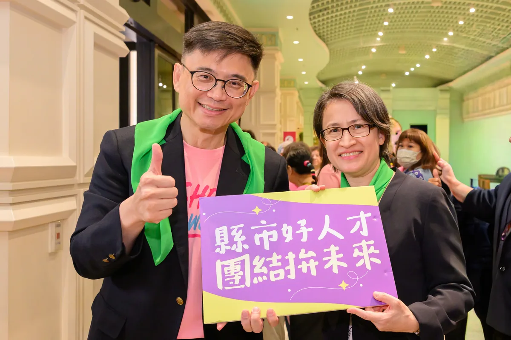
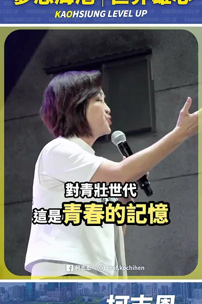
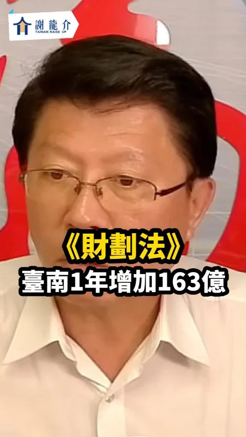
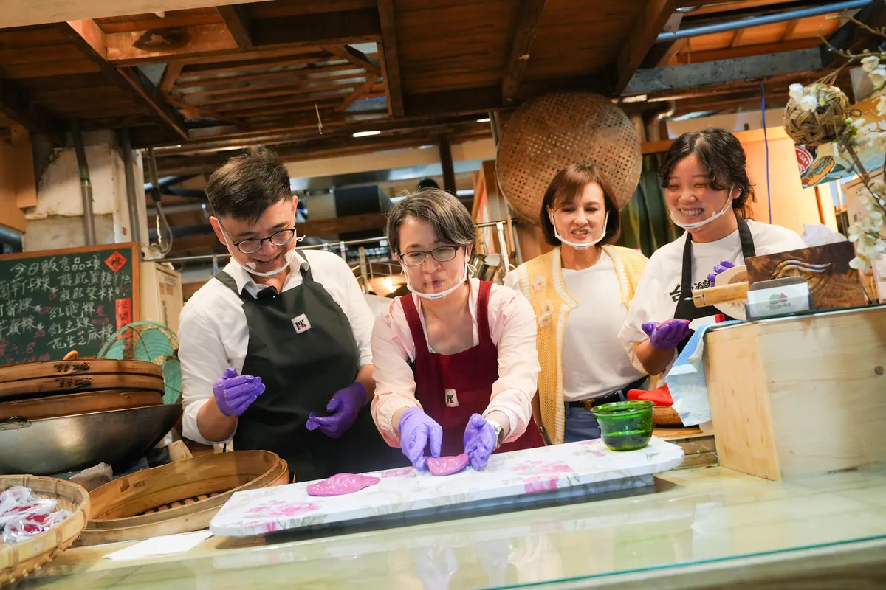
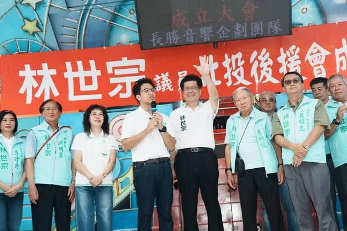

Opposition Parties Pass "Fiscal Revenue and Expenditure Act," Giving Tainan an Extra $16.3 Billio...
Posts
Opposition Parties Pass "Fiscal Revenue and Expenditure Act," Giving Tainan an Extra $16.3 Billio...


非常感謝數百位 #澎湖鄉親、#機車業好朋友 站出來，一連為我成立兩個後援會。 新北和澎湖都有豐厚的自然資源與海洋文化，未來我不但會透過 #新皇冠海岸計畫，擦亮新北145公里海岸線品牌，更要和未來的 @wu_shuchin #吳淑瑾 澎湖縣長，推動更多跨域合作！ 🌊舉辦「海洋文化節」、雙城聯名遊程，讓新北、澎湖觀光共好！ 🌊擴大舉辦「澎湖農漁特產展售會」，引進澎湖好滋味，穩定產銷通路。 🌊推動「新北澎湖遊學團」，傳承在地特色與文化。 🌊深化技職教育、促進技術交流，加速漁業智慧轉型。 針對機車產業發展，我也向大家報告未來努力的方向： 🛵提高「乙級技術士證照獎金」至6000元，補助車行降噪、排風、防汙設備，實現車行、社區共榮共好。 🛵強化道路安全、支持「合法改裝、客觀驗車」，民眾騎車更安心、更便利。 🛵舉辦「新北機車展」，結合商圈創造規模經濟。 倒數68天，做伙打拚、做伙好！新北就要迎接新時代✨

@prof.kochihen:客庄有青年，客家就有未來 四年前，我曾在美濃天后宮辦過廟口開講。那晚廟埕來了好多鄉親，給予我滿滿的熱情與支持，我一直都感恩在心。 說到美濃，大家熟悉粄條、紙傘、藍染和田園風光。對生活在這裡的鄉親來說，客庄更是每天的生活：年輕人回鄉找得到機會，農產和工藝賣得出去，旅客願意留下來，孩子在家裡、學校和街坊都能自然說客語。這些事，我會放進市政裡，認真來做。

@a_chun1973:台中有紮實領先的產業基礎，何欣純要做2件事，再造台中產業新核心： 1、在技職教育體系裡好好人才培育。 2、智慧化、AI化，建立產業升級創新中心。 新台中，就交給何欣純！


@zenolai:這個週末，我們連續成立了工業區、姊妹會、客家、左營楠梓四個後援總會，看到大家站出來相挺，心裡滿是感動和責任。 高雄的發展引擎正在全速運轉。在工業區後援會上，我向企業界承諾，未來的高雄不能只當AI的房東，我們必須成為AI的股東。傳統產業和科技產業要互相加值，帶動高雄經濟大步向前。 城市的進步，更需要溫暖的力量支撐。在姊妹會上， @bikhimhsiao 蕭副總統特別到場支持，滿場的熱情讓我非常感動。我承諾推動「雄愛媽媽」三大政策，從加碼育兒補助、擴大產後照顧，到協助重返職場，高雄一定會做每一位女性最堅強的後盾。
傳承民主精神，帶領高雄走向世界大舞台！ 民主進步黨創黨40週年，今晚的紀念音樂會充滿了回憶和感動。40年前，民主前輩們在街頭唱著爭取自由的歌；40年後的今天，換我們接棒，繼續為台灣的未來打拚。 今晚和大家一起唱《快樂的出帆》，也讓我想到這幾年高雄越來越熱鬧。很多朋友都說，來高雄看演唱會真的很過癮。未來，我會延續這份熱潮，讓各項盛典在高雄越辦越精彩。我要讓全世界知道，高雄的工業很強、科技很強，辦演唱會同樣是世界一流，讓高雄成為大家來了還想再來的城市。 這幾年的轉型，讓高雄的蛻變有目共睹。我一直相信，高雄值得站上更大的舞台，而我的責任，就是把燈光、音響再開大一點，讓這座城市的光芒被全世界看見。 40年前，前輩為民主打下基礎；40年後，我們接棒繼續往前。讓我們一起快樂出帆，帶著高雄走向世界。
@prof.kochihen:高雄就像一台跑車，如果永遠打在同一檔，無法超越，唯有換檔、換駕駛，我們才有辦法駛出全世界。 柯志恩今天在這裡，除了已經提出「13579」願景，我還要提出高雄四個優先： 第一個就是「薪水漲起來」 第二個就是「讓人留下來」 第三個「環境好起來」 最後就是「高雄拚世界（sè-kài）」！ 高雄有許多非常棒的產業，有農業、漁業、螺絲、扣件，真正要推銷出去，我們一定要讓世界認證，讓大家的薪水更好。 我們人才有那麼多，不管是科技人才、高雄子弟要留在高雄；還有觀光客，把觀光做好、把人留下來！

今天的 #鳳山 ，讓我再次看見高雄改變的力量！ 八年前，我和 #蔣萬安 一起站在鳳山，見證高雄的改變；八年後，我們再次站在這裡，看見的依然是人民期待更好未來的眼神。 謝謝 台灣公道伯 王金平 院長、蔣萬安 市長、李四川Hammer Lee 市長候選人，以及所有議員、里長和鄉親朋友到場相挺。 王院長說，八十多歲了，為什麼還願意再度「撩落去」？因為他掛念高雄的未來，掛念年輕人的機會，也掛念下一代要生活在什麼樣的城市。 李四川、川伯說，市政沒有小事，路平、燈亮、水溝通，看起來平凡，卻是人民每天最真實的感受。下雨能不能安心睡覺、長輩出門方不方便、孩子回家路安不安全，都是市長該放在心上的事。 蔣萬安市長則提到，時間最能驗證政治人物的承諾，四年前我答應大家留在高雄，這些年我沒有離開。我走遍38個行政區，從山區到海邊，從農村到市區，一步一步認識這座城市，也更了解高雄人的期待。 高雄這些年有進步，我們願意肯定；但高雄的下一步，不能只滿足於現在。 孩子為什麼還是北漂？ 薪資為什麼追不上房價？ 科技產業來了，傳統產業怎麼升級？空氣、水質、工安、職安，以及城鄉資源分配，還有多少問題等待解決？ 高雄是一輛性能優異的跑車，但如果永遠停留在同一個檔位，就無法跑向更遠的未來。 所以我提出13579政見，高雄未來最優先的方向：薪水漲上去，把人留下來；環境更美好，高雄拚世界。 讓產業升級，讓青年看見機會；讓經濟發展，也讓空氣更好、水質更好；讓高雄不只是被世界看見，更能走向世界。 今天站在台上的，一位是工程師、一位是律師，而我是老師。我們來自不同領域，但有共同信念，讓專業回歸市政，把人民放在第一位。 高雄不屬於任何政黨，高雄屬於所有高雄人。這場選舉，不只是選一位市長，更是在決定高雄下一個階段要往哪裡走。 我們一起站在這裡祈求一個可以服務鄉里的機會，不要製造世代對立，也懇請大家支持我們所有議員和里長，我們絕對全心以高雄為榮，讓全台灣、全世界看到高雄。 鳳山吹起的風，我相信會吹向整個高雄，讓我們的勝選政黨輪替、再創奇蹟。 #高雄 #翻轉高雄 #再創奇蹟 #更好的未來
嘉義人挺自己人！非常感謝 @onlychiayi #翁章梁 縣長特別到新北，和破千名在新北生活、打拚的嘉義鄉親一起為我加油！ 未來，我不但會用新觀念，做好城市的代言人，我也和 @chiayionefish #蔡易餘 縣長候選人一起提出兩座城市的 #AI產業、#農業人才 相互交流串連，要讓新北、嘉義一起升級！ 做伙拚、做伙好！新北、嘉義就要迎接新時代！

芋筍飄香，來甲仙感受山城魅力！🏞️ 一早參加一年一度的 #甲仙芋筍節，和陳其邁市長一起體驗大小丑操偶。除了甲仙芋、麻竹筍等在地農產，今年還有「偶泥家族」貓咪裝置藝術、精彩表演和市集。身為家裡養了三隻貓的貓派，來到甲仙當然不能錯過！ 從貓巷到「貓元年」，甲仙用貓咪彩繪和藝術創作，為老街和商圈增添新的特色。這幾年，陳其邁市長和市府團隊陸續推動甲仙公園、街區及人行環境改善，也謝謝邱議瑩委員長期為甲仙、東高雄爭取資源，從農民權益、農會設備到地方建設，都投入許多心力。尤其甲仙化石館目前正等待整修，明年完成後，將進一步帶動商圈及觀光發展。 未來，我會繼續協助甲仙芋、麻竹筍、青梅提升品牌價值，串聯山林、溫泉與周邊景點，發展山城旅遊；交通、醫療方面，持續推動東高雄交通建設及醫療資源整合，照顧山城鄉親的生活需求。 陳其邁 Chen Chi-Mai 登真-邱議瑩 林富寶 高雄市議員 林慧欣


[Highlights from the Xinxing District Temple Square Speech] Let Kaohsiung's next generation thriv...

🪩高雄半導體S廊帶 產業聚落再添一塊 #白埔產業園區 正式動土！ 今天與 賴清德 總統、陳其邁 Chen Chi-Mai 市長及產業界夥伴參加白埔產業園區動土，共同見證中央地方攜手，持續為高雄引進投資。 白埔產業園區以「半導體先進設備材料驗證基地」及「AI先進製造基地」為定位，串聯楠梓、仁武、橋頭等產業聚落，從先進製程、封裝測試，到材料、設備及AI製造，進一步完善高雄半導體S廊帶布局。 接下來，我會結合左營 #國家重點領域校際研教園區，加強人才培育，提供年輕人在高雄就業、發揮所長的機會。同時推動北高雄傳統產業高值化，以「科技加值傳產、傳產支撐科技」為方向，協助岡山、橋頭的金屬、機械、扣件業者，以及路竹的材料業者，運用既有製造優勢，切入半導體供應鏈。 從扣件到晶片，高雄累積多年的製造實力，正迎來新的發展機會。我會繼續努力，為高雄拚下一個黃金十年！ 邱志偉 李柏毅 拚搏未來 高雄小金剛許智傑 康裕成 高雄市議長 邱俊憲 高雄市議員 林智鴻 高雄市議員 黃秋媖-動保議員 林志誠-高雄市議員 蔡秉璁 高雄向前衝 尹立 左營楠梓市議員參選人

客庄有青年，客家就有未來 四年前，我曾在美濃天后宮辦過廟口開講。那晚廟埕來了好多鄉親，給予我滿滿的熱情與支持，我一直都感恩在心。 說到美濃，大家熟悉粄條、紙傘、藍染和田園風光。對生活在這裡的鄉親來說，客庄更是每天的生活：年輕人回鄉找得到機會，農產和工藝賣得出去，旅客願意留下來，孩子在家裡、學校和街坊都能自然說客語。這些事，我會放進市政裡，認真來做。 1️⃣ 高雄接棒，讓世界看見客家 我會向中央爭取續辦「世界客家博覽會」，並由高雄承辦。以美濃、杉林、六龜等客庄為舞台，串聯海外客家社群，定期舉辦國際論壇、青年交流與藝文合作，把高雄客庄介紹給世界，也一步步把高雄打造成南方客家文化首都。 2️⃣ 客青返鄉，資金、品牌、通路一起到位 推動「高雄客庄復興計畫」，18至40歲青年投入文化、農業、工藝、觀光或地方創生，符合資格並通過審查者，市府每年最高補助50萬元，也協助申請中央資源，兩年合計最高可達200萬元。 市府也會建置客家文化新創集資平台，推動「高雄客庄品牌」與「客家之光」評選，把農產、美食、工藝和文創商品送上共同電商平台。鄉親專心把產品做好，品牌、行銷和通路，市府一起來幫忙。 3️⃣ 從旗美出發，把人潮帶進東九區 以美濃、旗山為旅遊雙核心，改善公共運輸和轉乘，串起內門、杉林、六龜、甲仙等山城景點。旅客從旗美出發，沿著山城慢慢走，半日遊也能變成兩天一夜。 再推出「高雄好客券」：入住客庄地區的合法旅宿或露營場，消費滿1,500元，就能領取500元好客券，到在地特約店家使用。人留下來，住宿、餐飲、農產和商店就有更多生意。 4️⃣ 客家活動我來挺，客庄故事留得住 為鼓勵舉辦客家活動，市府對區公所、各級學校與客家團體文化活動補助，也要實在加碼。同一申請單位每年補助上限由10萬元提高到20萬元；政策性計畫或具文化傳承意義的大型活動，由30萬元提高到60萬元，讓長年在地方保存文化的人得到更多支持。同時，也支持以高雄客庄為主題的音樂、影視及文化創作，讓客庄的美、文化及歷史記憶被世界看見，也希望藉此吸引更多旅客到訪，帶動地方觀光與經濟發展。 現有「高雄客家月」將擴大整合，升級為「高雄客家季」。客家流行音樂祭、市集、工藝展、影像展演與歲時祭典接力登場，客庄與都會區一起熱鬧，做成市民會期待、外地旅客也願意專程參加的高雄盛典。 同時建立「高雄客庄數位典藏」，逐步收錄庄頭歷史、耆老口述、老照片、工藝技法與文化故事，提供學校教學、館舍展示和旅遊導覽使用，把珍貴的地方記憶好好保存下來。 5️⃣ 客家語言不流失，傳統工藝有傳承 2030年前，生活客語和沉浸式教學的參與學校數要倍增，並以三民、鳳山等都會區為目標持續擴大辦理。客語認證獎勵也提高為初級1,000元、中級1,500元、中高級3,000元、高級5,000元、專業級6,000元，鼓勵更多孩子和年輕人開口說客語。 伙房、老街、伯公、敬字亭和歷史聚落，要好好保存；油紙傘、藍染、竹編等工藝，也要建立傳承和培育機制。家裡有人說、學校有人教、手藝有人接，客家文化才會一代一代留在生活裡。 我期待四年後再走進美濃，看到返鄉青年開了店、庄頭產品接到更多訂單，孩子用客語和長輩聊天，外地旅客住了一晚還捨不得走。 上週，再度前往美濃天后宮廟口開講，看到鄉親對美濃的期待、對客庄的建議。這些年來，來自客家鄉親的鼓勵，我一直記得，恁仔細！ #高雄客家 #客庄有青年客家有未來 #這柯不一樣
台中有紮實領先的產業基礎，何欣純要做2件事，再造台中產業新核心：1、在技職教育體系裡好好人才培育。2、智慧化、AI化，建立產業升級創新中心。新台中，就交給何欣純！
讓「臺中升級、幸福加給」💪 「#20分鐘生活圈」把最寶貴的時間還給市民！ 感謝太平鄉親搖扇吶喊的熱情，這是啟臣為大家拚搏最大的動力！未來，我將導入AI科技治理，規劃臺中「五大生活圈」，落實「20分鐘生活圈」願景，讓大家在20分鐘內滿足生活所需，「把省下來的通勤時間，還給自己、留給家人」！ 首要任務是重整大眾運輸，做到「跨域快、圈內密、轉乘方便」，串聯六大轉運樞紐，大幅提升交通效率。 啟臣更要推動產業智慧升級，對接半導體、機器人製造、無人載具等新興供應鏈；導入科技智慧農業，再造臺中「領鮮」品牌，創造青年留鄉、返鄉的發展機會；同時擴大托育、托老政策，減輕年輕家庭負擔，讓不同世代都能在臺中幸福安居。 感謝 #賴義鍠議員、 #黃佳恬議員 與里長們的全力相挺！懇請鄉親集中選票支持啟臣，讓我能在市府與議員、里長們並肩作戰，讓臺中啟程、打造旗艦城。 #臺中啟程 #打造旗艦城
今天的鳳山，讓我再次看見高雄改變的力量！ 八年前，我和蔣萬安一起站在鳳山，見證高雄的改變；八年後，我們再次站在這裡，看見的依然是人民期待更好未來的眼神。 謝謝王金平院長、蔣萬安市長、李四川市長候選人，以及所有議員、里長和鄉親朋友到場相挺。 王院長說，八十多歲了，為什麼還願意再度「撩落去」？因為他掛念高雄的未來，掛念年輕人的機會，也掛念下一代要生活在什麼樣的城市。 李四川、川伯說，市政沒有小事，路平、燈亮、水溝通，看起來平凡，卻是人民每天最真實的感受。下雨能不能安心睡覺、長輩出門方不方便、孩子回家路安不安全，都是市長該放在心上的事。 蔣萬安市長則提到，時間最能驗證政治人物的承諾，四年前我答應大家留在高雄，這些年我沒有離開。我走遍38個行政區，從山區到海邊，從農村到市區，一步一步認識這座城市，也更了解高雄人的期待。 高雄這些年有進步，我們願意肯定；但高雄的下一步，不能只滿足於現在。 孩子為什麼還是北漂？ 薪資為什麼追不上房價？ 科技產業來了，傳統產業怎麼升級？空氣、水質、工安、職安，以及城鄉資源分配，還有多少問題等待解決？ 高雄是一輛性能優異的跑車，但如果永遠停留在同一個檔位，就無法跑向更遠的未來。 所以我提出13579政見，高雄未來最優先的方向：薪水漲上去，把人留下來；環境更美好，高雄拚世界。 讓產業升級，讓青年看見機會；讓經濟發展，也讓空氣更好、水質更好；讓高雄不只是被世界看見，更能走向世界。 今天站在台上的，一位是工程師、一位是律師，而我是老師。我們來自不同領域，但有共同信念，讓專業回歸市政，把人民放在第一位。 高雄不屬於任何政黨，高雄屬於所有高雄人。這場選舉，不只是選一位市長，更是在決定高雄下一個階段要往哪裡走。 我們一起站在這裡祈求一個可以服務鄉里的機會，不要製造世代對立，也懇請大家支持我們所有議員和里長，我們絕對全心以高雄為榮，讓全台灣、全世界看到高雄。 鳳山吹起的風，我相信會吹向整個高雄，讓我們的勝選 政黨輪替、 再創奇蹟。 #高雄 #翻轉高雄 #再創奇蹟 #更好的未來
Connecting Resources! New Taipei and Chiayi: Better Together, Winning Together!
@su.chiaohui:嘉義人挺自己人！非常感謝 @onlychiayi 翁章梁縣長特別到新北，和破千名在新北生活、打拚的嘉義鄉親一起為我加油！ 未來，我不但會用新觀念，做好城市的代言人，我也和 @chiayionefish 蔡易餘縣長候選人一起提出兩座城市的AI產業、農業人才相互交流串連，要讓新北、嘉義一起升級！ 做伙拚、做伙好！新北、嘉義就要迎接新時代！

回到從政起點，再為豐原、后里拚一次！💪 回到翁子里，心裡特別有感。十多年前，我人生第一場選戰的競選總部就在會場對面，這裡正是啟臣從政的起點。我親自為深耕地方26年的老戰友連佳振 最佳選擇 振心服務授戰旗，攜手為地方建設繼續打拚！ 從國四豐潭段、東豐快速道路，到 #活化舊縣府周邊、打造 #中興健康園區 及 #青年創新創業基地，我們要讓建設接力、地方升級，讓長輩獲得更好的照顧，也讓年輕人留在家鄉發展。 11月28日，懇請鄉親支持啟臣、肯定佳振，讓啟臣進市府、佳振進議會，府會同心，一起帶動豐原、后里與山城大步向前！ #臺中啟程 #打造旗艦城 #臺中升級 #翁子里 #地方建設


成德市場，是許多南港人的日常，也是鄰近忠孝院區醫護人員、病患家屬採買的重要去處。 ⠀ 和成德市場和攤商與鄉親問候，聽聽大家對市場未來的期待；也謝謝自治會杜樁松會長熱情接待。 ⠀ 從早年的臨時攤販，到市場整建、攤商搬遷，成德市場陪伴地方走過數十年。未來如要改建，除了讓市場更安全、乾淨、舒適，也一定要傾聽攤商與住戶的聲音，讓改建真正符合地方需要。 ⠀ 謝謝每一位熱情打氣的朋友，市場的人情味，就是台北最珍貴的城市風景！ ⠀ ＃台北順起來 ＃你的市長沈伯洋

@hsiehlungchieh:在野黨通過《財劃法》讓台南一年增163億預算！行政院版本連計算公式都沒有
@prof.kochihen:高雄就像一台跑車，唯有「換檔」衝刺，才能駛出全世界。 柯志恩提出「四個優先」： 「薪水漲起來」「讓人留下來」「環境好起來」「高雄拚世界」 讓高雄再創奇蹟，實現夢想海港，世界雄心！
【919鳳山大造勢｜柯志恩演講精華】 高雄就像一台跑車，唯有「換檔」衝刺，才能駛出全世界。 柯志恩提出「四個優先」： #薪水漲起來 #讓人留下來 #環境好起來 #高雄拚世界 讓高雄再創奇蹟，有志一同，翻轉高雄！ #柯志恩 #蔣萬安 #李四川 #王金平 #大風起 #夢想海港 #世界雄心

一顆紅龜粿，把台灣味帶向世界！ 蕭美琴 Bi-khim Hsiao 副總統過去擔任駐美代表時，曾在雙橡園用紅龜粿、珍珠奶茶招待國際友人。她說，在海外最懷念的，就是台灣各式各樣的傳統小吃。 日前特別帶美琴副總統到鹽埕第一公有市場，走進「食好粿大富粿」，親手體驗做紅龜粿。從包餡、搓圓到壓模，看著一顆顆紅龜粿成形，讓我們聊起台灣味、青年接班，以及高雄如何走向世界。 鹽埕因港而生，是高雄最早與世界接軌的地方之一；有77年歷史的鹽一市場，經過改造後，老市場的記憶留下來了，也有越來越多年輕人走進來，接下上一代的手藝，再加入自己的創意。 「食好粿大富粿」年輕老闆，就是回來接下阿嬤超過30年的製粿手藝。傳統沒有停在過去，而是透過一代又一代的人，繼續發展出新的樣貌。 高雄要走向國際，靠的不只有重大建設、產業投資與大型活動，這些屬於高雄的文化、味道與人的故事，也都是最好的城市名片。未來，我將推動「南方有夢：雄青五力旗艦計畫」，讓更多年輕人有機會留在高雄創業、實現自己的想法，也能從高雄連結世界。 最後一定要說，剛出爐的紅龜粿真的很好吃！ 至於甜不甜？我想沈伯洋應該會有不同意見😆 登真-邱議瑩 簡煥宗 高雄市議員 姐姐的行動力 李喬如
讓禱告成為希望，用行動改變高雄！ 參加第五屆 #高雄城市祈禱午餐會 ，心裡有很深的感動，來自不同教會、不同領域、不同背景的朋友齊聚一堂，為同一座城市獻上祝福與禱告。 感謝高雄市基督教福音聯盟協會，以及楊錫儒牧師和所有牧長、弟兄姊妹多年來深耕社區；在大家需要協助的時候，都能看見教會付出的身影。 大家站在一起為 #高雄 禱告，談的不只是城市建設，更關心人口發展、青年未來、居住正義、就業創業、世代共融，以及每一個家庭的幸福。 聖經中說：「你們要為那城求平安。」我特別喜歡！因為我們所追求的平安，不只是沒有風雨，而是長輩有人照顧、孩子能安心成長、家庭能看見希望、年輕人願意把夢想留在高雄。 #禱告 不是把責任交出去，而是在禱告之後，更要走出去，看見需要，就伸出援手；看見問題，就一起尋找答案；看見城市的未來，就共同承擔責任。 願我們繼續攜手同行，讓更多善意在高雄匯聚，讓更多希望在高雄扎根；願上帝祝福高雄，祝福每一個家庭，也祝福所有願意為這座城市付出的人。
@zenolai:英雄路、愛河灣大爆滿！ 大家的熱情讓我們寸步難行，但台北高雄一定繼續向前行！ 洋流到港，隆捲風來襲！今天和 @pumashen 沈伯洋從英雄路走向港灣，沿途握不完的手、接連不斷的加油聲，讓我們前進的每一步，都感受到高雄最真摯熱烈的支持！ 今天我們在此走過的每一步都不容易。從謝長廷市長整治愛河、陳其邁代理市長拆除港邊高牆、陳菊市長啟動亞洲新灣區建設，到我有幸在2013年擔任海洋局長時策劃 #黃色小鴨，再到 @chenchimai 陳其邁市長推動輕軌成圓、完善交通，透過熱門IP吸引人潮、帶動招商與灣區經濟。歷任市長、市府團隊與中央攜手投入，一棒接一棒，才有今天的港灣風景，我很珍惜能參與其中。 承接前人的努力，更要為下一代開路。今天握緊的手、喊出的加油，我和沈伯洋都會記在心裡，帶著大家對台北、高雄的盼望，我會接好這一棒，繼續為高雄打拚！也拜託大家陪我們走到最後，把今天的熱情化為行動，今年 11/28 邀請家人、朋友一起出門投下關鍵一票。 感謝今天每一位站出來相挺的朋友！過去我把黃色小鴨丟進水裡，期待今年11/28以後，我可以驕傲地說：「我是第一個把台北市長丟下水的高雄市長！」


讓街道更好走，讓散步成為中壢的日常 一座城市的進步，不只有捷運、道路這些大型建設，也包括每天出門走路時，一些很實際的感受。 過去的中壢復興路，更多是提供車輛通行；現在，我們把更多空間留給行人、自行車，也增加綠樹和休憩空間； 除了拓寬人行空間，也拆除占用道路的違建及電箱等設施，讓人行動線更完整。此外，也新設實體車阻，增加行走時的安全防護；同時整理架空纜線等雜亂設施，讓街道的視覺更乾淨、更舒服。 從人行空間、路口設計，到街道景觀，我們把一項一項的細節做好，讓復興路成為一條可以慢慢散步的街道。 當然，一條復興路改造完成，還遠遠不夠。 目前，中壢中正公園周邊的改造還進行，預計明年3月完工，完工後將能串聯中壢火車站、中壢圖書館、仁海宮等節點，讓中壢市區的生活空間更完整、更便利。 不只是中壢，我們也已經啟動龍潭舊城、富岡老街的人本環境改善計畫，逐步補足舊市區較缺乏的行人空間與公共環境，把市民每天要走的街道建設好，讓人願意走、願意停留，也讓沿街商業有更好的發展空間。
嘉義人挺自己人！非常感謝 翁章梁 Weng Chang-Liang 縣長特別到新北，和破千名在新北生活、打拚的嘉義鄉親一起為我加油！ 未來，我不但會用新觀念，做好城市的代言人，我也和 蔡易餘 家己人 縣長候選人一起提出兩座城市的 #AI產業、#農業人才 相互交流串連，要讓新北、嘉義一起升級！ 做伙拚、做伙好！新北、嘉義就要迎接新時代！

士林北投，有山水、有溫泉，有傳統市場，也有正要發展的北士科。這裡有台北的歷史，也有台北的未來。 ⠀ 士林北投林世宗議員在士林北投服務快20年，謝謝他一路以來的幫助，從磺港溪、北投市場，到環境、社子島、北士科，長期站在地方第一線，最清楚居民真正需要的是什麼。在世宗議員北投後援會成立大會上，也看見許多鄉親一路相挺的力量，成為世宗議員繼續為地方打拚的最大動力。 ⠀ 未來北士科的科技紅利，我希望能真正回到地方，讓交通、住宅、生活機能一起跟上，也讓商圈、市場一起受惠。 ⠀ 我提出城市未來的新方向，世宗議員有深厚的地方經驗。把市政府與市議會的力量接起來，一起讓士林北投更好，讓台北順起來！ ⠀ #台北順起來 #你的市長沈伯洋

@a_chun1973:我和屯區議員共同提出「六星新屯區 」政策願景，從交通、產業、生活到青年文化，將以五大進擊＋一個創新軟實力，來推動屯區全面升級！ 📌 捷運建設大進擊 藍線延伸太平、橘線加速推進、屯區環狀紫線加速核定。 📌 公路交通大進擊 改善中投公路、台74線及太平市民大道，導入AI智慧交通管理。 📌 產業智慧大進擊 加速產業園區開發，推動無人載具、AI智慧製造與傳統產業轉型。 📌 公共服務大進擊 推動大里聯合行政中心、停車空間及托育量能提升。 📌 青年創意大進擊 活化大里菸葉廠，打造「台中版松菸」，成為青年創業、文化展演與市民共享基地。 📌 科技文化大進擊 強化AI人才、設計創意與在地文化觀光軟實力。 鄉親的期待，就是屯區女兒繼續打拚的動力。六星新屯區，讓家鄉持續向前！